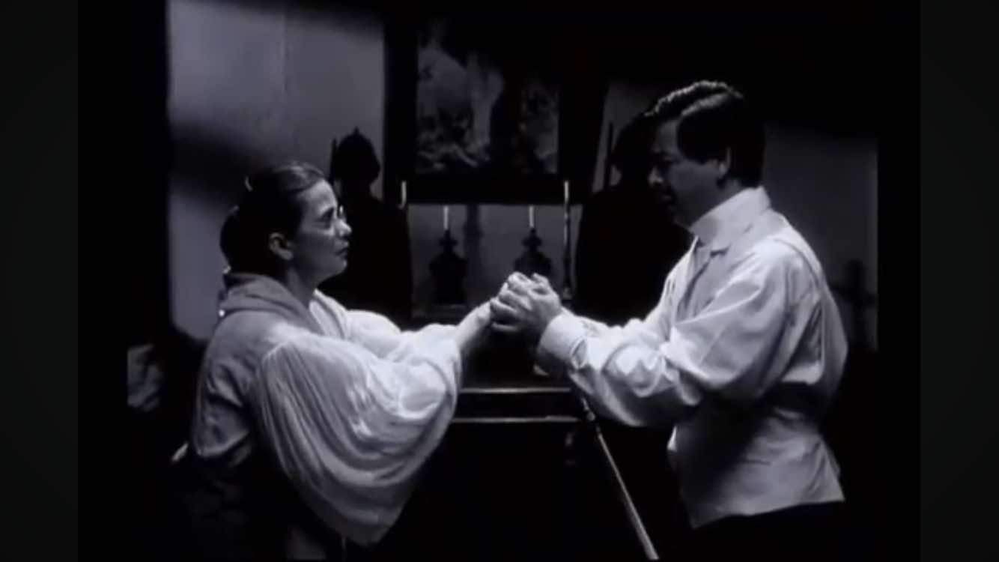
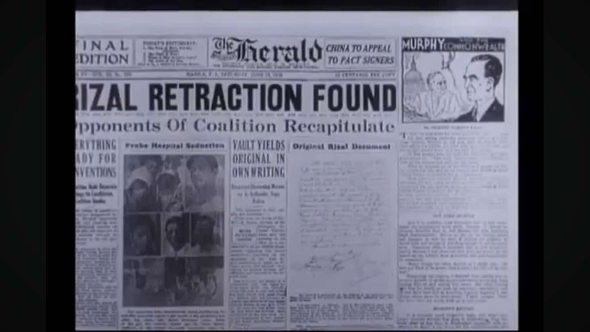
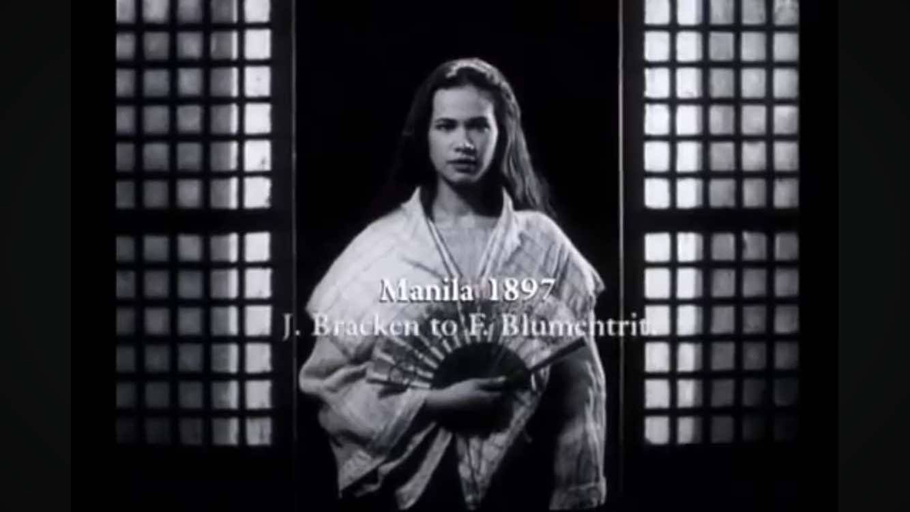
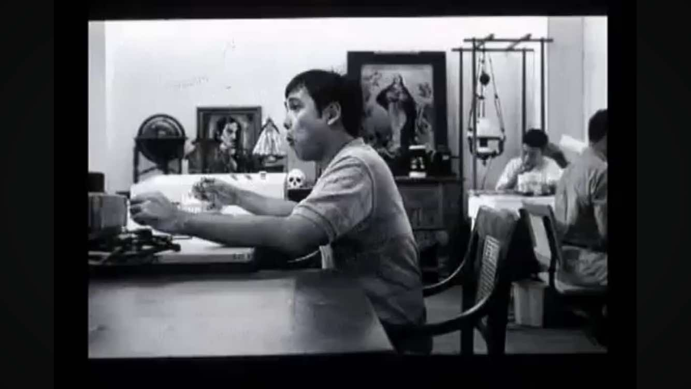
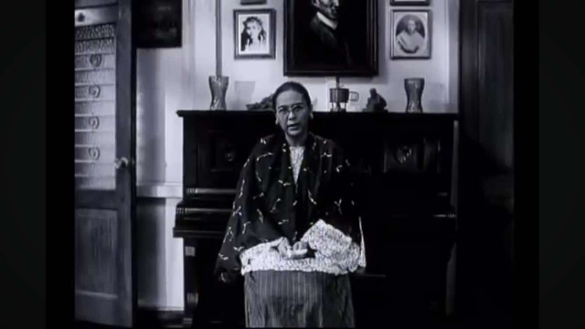
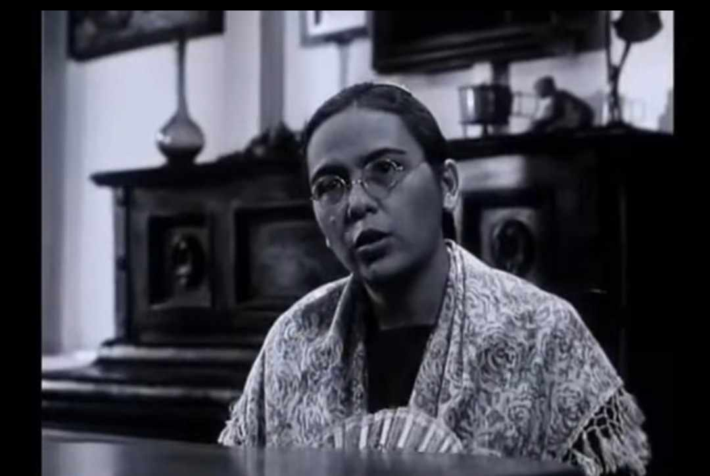
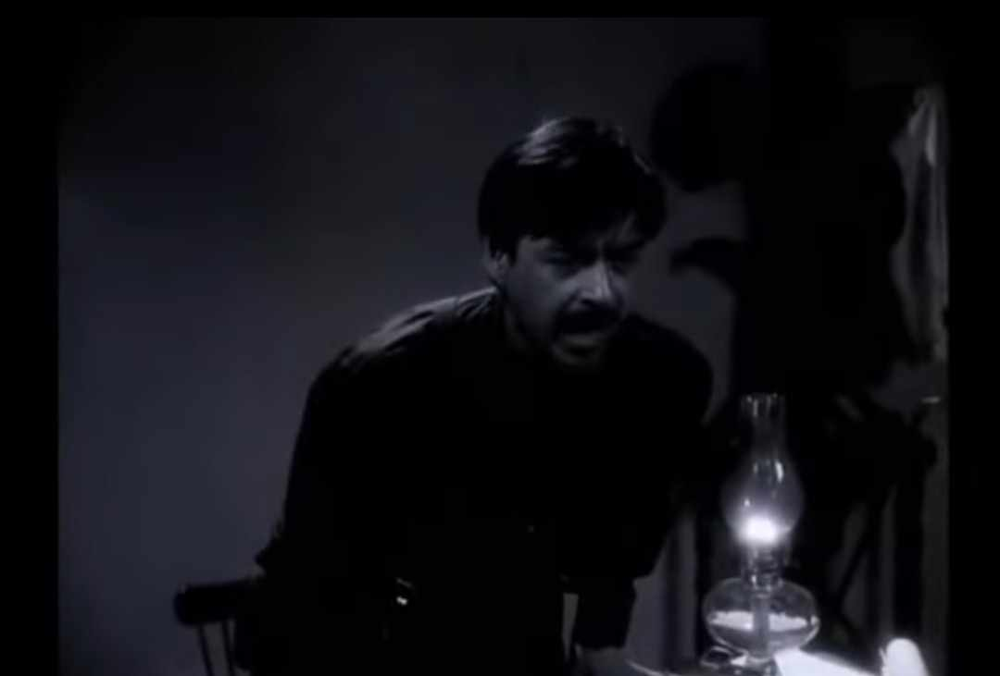
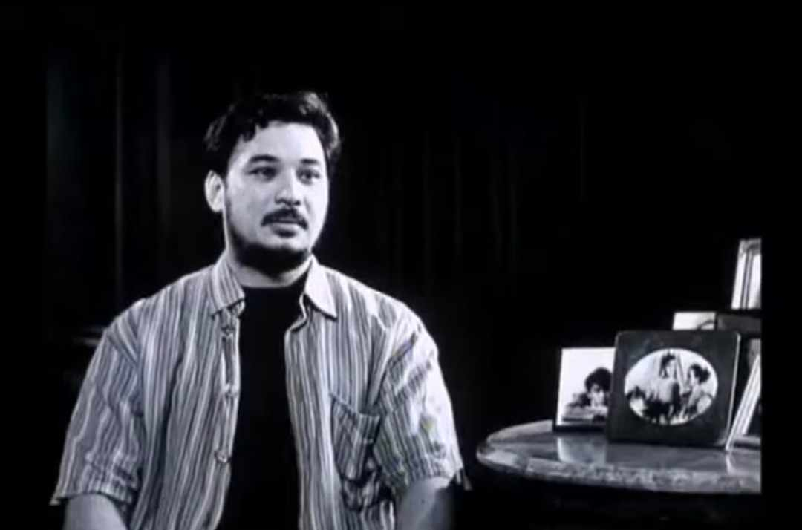
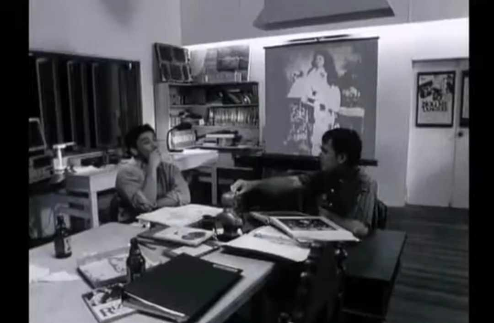

The 19th century was a crucial period in Philippine history, bringing major political, economic, social, and cultural changes. Under Spanish colonial rule, the Philippines was governed by the Governor-General, who represented the Spanish Crown. However, the colonial government was highly corrupt, with excessive taxation and widespread abuses by Spanish officials and friars. Liberal ideas from Europe, particularly from the Enlightenment and the French Revolution, influenced José Rizal and other Filipino intellectuals, shaping their desire for reform and justice.
Economically, Spain’s decision to open Manila to world trade in 1834 led to significant changes. A new middle class, the ilustrados, emerged, including Rizal’s family. While this boosted economic activity through cash crops like sugar, tobacco, and abaca, it also worsened economic inequality. Spanish elites and friars controlled vast lands (haciendas), forcing Filipino farmers into unfair labor systems such as polo y servicios (forced labor). This growing economic disparity fueled resentment among Filipinos.
Education and social structure also played a role in the awakening of Filipino nationalism. The ilustrados studied in Europe and returned with progressive ideas, advocating for reforms. However, the education system remained under the control of Spanish friars, limiting access to knowledge for most Filipinos. The Gomburza execution in 1872 further ignited resistance, as Filipino priests like Father José Burgos fought for equal treatment in the church. Rizal, influenced by these events, strongly supported education and empowerment, including advocating for women’s rights, as seen in his letter to the women of Malolos.
This topic was chosen by this because it provides a clear understanding of the historical events that shaped Rizal’s thoughts and actions. It highlights how various political, economic, and social issues fueled Filipino nationalism and led to the eventual fight for independence. Learning about Rizal in the context of the 19th century helps in appreciating his role not just as a writer but as a key figure in the country’s fight against colonial oppression. His story remains relevant today, reminding Filipinos of the importance of education, critical thinking, and standing up against injustices.
1. The filmmakers discuss their intent to create a film about José Rizal. What challenges do they
anticipate in portraying his life?
 -----------The filmmakers struggle to identify a unique angle for their film, aiming to avoid redundancy with existing portrayals of Rizal's life.
(4:00-13:00).
-----------Addressing the Retraction Controversy: They grapple with the ambiguity surrounding Rizal's alleged retraction of his anti-Catholic writings before his execution. This controversy presents difficulties in accurately depicting his beliefs and convictions.
(13:44-15:15).
2. A debate arises about the authenticity of Rizal's retraction document. What are the main
arguments presented regarding its validity?
 -----------The Catholic Church and some historians claim that several copies of the retraction document exist, reinforcing its legitimacy Eyewitness Accounts – Church officials, including Jesuit priests, testified that Rizal retracted and even received religious rites before his death.
----------- Consistent Handwriting – Some experts argue that the handwriting in the document matches Rizal’s, which suggests that he indeed wrote it.
----------- Catholic Marriage to Josephine Bracken – Some sources claim that before his execution, Rizal married Josephine Bracken in a Catholic ceremony, which implies he had reconciled with the Church.
----------- Absence of the Original Document – The original handwritten document has never been publicly shown, and only copies exist, raising suspicions of forgery.
----------- Conflicting Testimonies – Some of Rizal’s close associates, including his family, did not believe he would have retracted his beliefs, as he remained steadfast in his convictions throughout his life. ( 42: 05- 48:30).
3. The character of Josephine Bracken is introduced. How does the film depict her relationship with
Rizal?
 -----------Josephine Bracken is portrayed as a key figure in José Rizal’s personal life, but her relationship with him is shown as complex and shrouded in mystery. The film explores her role through an investigative lens, questioning the authenticity of their relationship and its significance in Rizal’s final days. Love and Affection – The film acknowledges that Josephine was Rizal’s partner, living with him in Dapitan during his exile. There are indications of a romantic bond, though the depth of their love is questioned. Uncertainty About Marriage – One of the film’s major debates is whether Rizal and Josephine were truly married in a Catholic ceremony before his execution. The lack of concrete evidence adds to the controversy.(36:48-44:15).
4. The filmmakers interview a historian about Rizal's alleged retraction. What evidence is provided
to support or refute the claim?
 -----------Spanish friars and Jesuit priests claimed that Rizal signed the retraction document and even received absolution before his execution.
-----------Copies of the Retraction Document – Although the original was reportedly lost, copies of the document exist, which the Church presents as proof that Rizal formally renounced his anti-Catholic writings.
-----------Alleged Marriage to Josephine Bracken – Some accounts suggest that Rizal married Josephine Bracken in a Catholic ceremony, which would have required him to reconcile with the Church.
----------- Jesuits' Involvement – Some historians argue that Rizal had a deep respect for the Jesuits, making it plausible that he returned to the Catholic faith before his death.
-----------No Original Document – The absence of the original handwritten retraction raises suspicions of forgery.
-----------Family and Friends’ Doubts – Rizal’s close friends and family never saw him waver in his principles, and they doubted the authenticity of the retraction.
-----------Conflicting Church Records – Some researchers argue that the Church’s records of Rizal’s retraction are inconsistent, further casting doubt on their credibility.(55:40-01:10:54).
5. The film presents different portrayals of Rizal’s execution. How does each version differ, and what
do these differences suggest?
-----------One version follows the traditional account, where Rizal is shot by a Spanish firing squad, falling heroically with his face toward the sky. This reinforces the image of him as a martyr who faced death with courage.Another version questions whether Rizal’s final moments were altered by historical narratives. Some portrayals suggest he may have fallen differently or even hesitated, challenging the idea that he fully accepted his fate. By presenting these variations, the film highlights how history can be shaped by different perspectives. It suggests that Rizal’s execution is not just a simple event but a constructed narrative, influenced by those who wrote it. This encourages viewers to think critically about historical accounts and how they shape our perception of heroes.(2:40-9:47).
6. One of the characters questions whether Rizal was truly a hero. What reasoning do they give to
challenge his heroism?
 ----------- One of the characters questions if Rizal was truly a hero. They argue that if he really retracted his beliefs before his death, he may have abandoned the revolutionary cause. Unlike Bonifacio, Rizal never led an armed revolution, making some doubt if he was a true fighter for freedom. His wealthy background also raises the question of whether he truly understood the struggles of ordinary Filipinos. The film also suggests that the Americans promoted Rizal as a national hero because he was peaceful, making his legacy seem influenced by foreign powers. Lastly, his personal life, including his relationships, is also questioned, asking if he was truly heroic in all aspects of his life.(1: 22:40).
7. A scene features a discussion about Rizal’s religious beliefs. How does the film depict his stance
on faith and the Catholic Church?
 -----------The film presents Rizal as someone who questioned the abuses of the Spanish friars but was not necessarily against the Catholic faith itself. He was a freethinker, valuing reason and individual belief over blind obedience. His novels, Noli Me Tangere and El Filibusterismo, strongly criticized corrupt priests, which led to conflicts with the Church. A major point of discussion is the retraction document, which some claim proves that Rizal reconciled with the Church before his execution. However, the film raises doubts about its authenticity, showing conflicting perspectives from historians, the clergy, and Rizal’s close associates.(40:00-55:30).
8. The film uses a unique narrative style, including fictionalized conversations with Rizal. How does
this technique affect storytelling?
 -----------The film uses fictionalized conversations with Rizal to make the story more interesting and thought-provoking. By having the filmmakers "interview" Rizal, the movie shows different sides of his story, especially about his retraction and personal life. This makes him feel more like a real person rather than just a hero from history books. The technique also highlights how history is unclear and full of different versions. Instead of giving a final answer, the film makes the audience think about what is true and how history is told.(1:20:40-1:28:30).
9. At one point, the filmmakers express frustration with their research on Rizal. What specific issue
causes this frustration?
 -----------The filmmakers grow frustrated with their research on José Rizal because of the contradictory and unclear historical records surrounding his life, particularly his alleged retraction. They struggle with the fact that there is no definitive proof of whether Rizal truly renounced his anti-Catholic beliefs before his execution. The original retraction document is missing, and existing copies raise doubts about their authenticity. Testimonies from different sources , church officials, historians, and Rizal’s own family are inconsistent, making it difficult to determine the truth.This frustration reflects the broader challenge of studying history: it is often shaped by different perspectives, biases, and missing evidence.(1:15:10).
10. The film concludes with a reflection on Rizal's legacy. How do the filmmakers interpret his impact
on contemporary Philippine society?
 ----------- The film ends with the filmmakers reflecting on Rizal’s legacy and his relevance to modern Philippine society.They realize that Rizal’s life is full of unanswered questions, like his alleged retraction and personal choices. But despite these uncertainties, his impact remains strong. His writings, ideas, and sacrifice continue to inspire Filipinos, especially in fighting for truth and justice.The filmmakers suggest that Rizal is more than just a national hero—he is a symbol of the ongoing struggle for freedom and identity. Rather than focusing on whether he was perfect, the film encourages viewers to critically think about history and how heroes are remembered.(1:28:30).